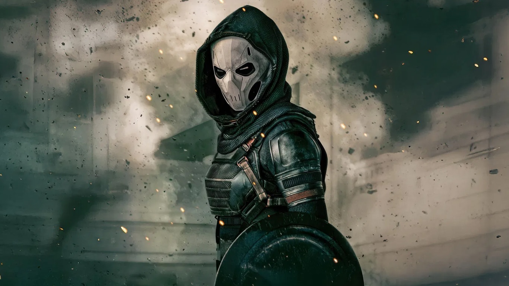

Antonia Dreykov / Treinadora
Interpretada por: Olga Kurylenko
Antonia Dreykov é filha do fundador da Sala Vermelha e foi transformada em uma assassina implacável com reflexos fotográficos, permitindo-lhe imitar qualquer estilo de luta. Após ser libertada do controle mental, ela luta para reconstruir sua identidade e lidar com os traumas do passado. Em Thunderbolts, sua jornada é marcada por desafios pessoais e a busca por um novo propósito.